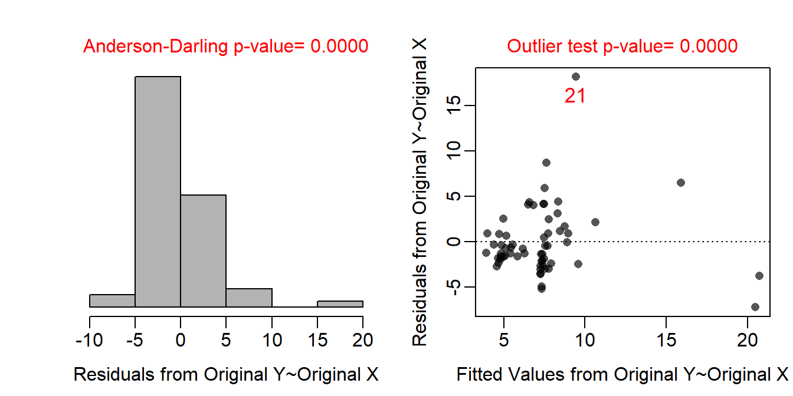
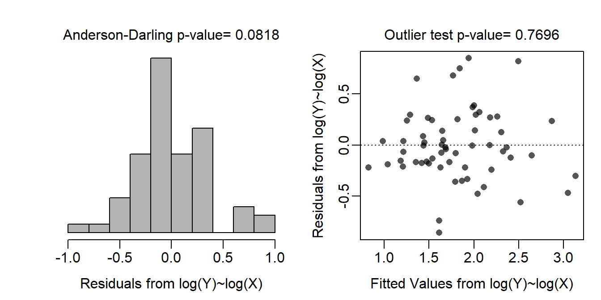
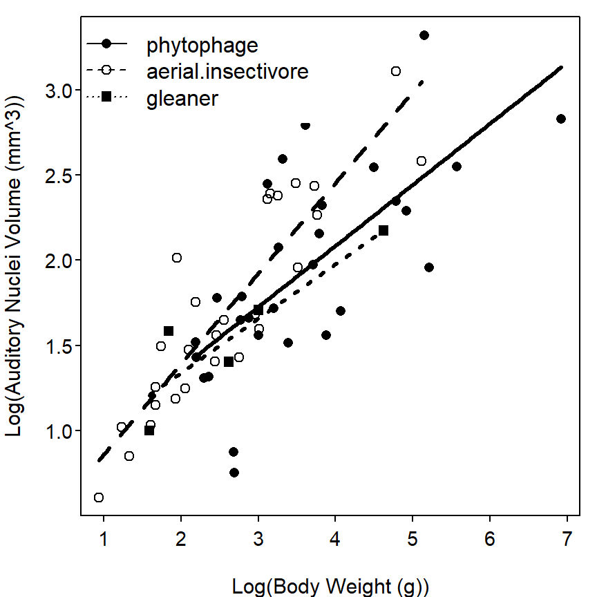

As there are three groups in this analysis and the “phytophagous” bats are to be the reference group, I created the following two indicator variables.
The ultimate full model is then μANV = α + βWT + δ1AI + δ2G + γ1AI×WT + γ2G×WT, where ANV is “auditory nuclei volume” and WT is “body weight” of the bats.
The submodels for all three groups are below.
The data appear to be independent as each individual is a separate species and no species is simultaneously grouped into two diet categories. There is some evidence for a slight non-linearity within the groups (Figure 1-Right). The residual plot (Figure 1-Right) also suggests heteroscedasticity. The residuals do not appear to be normal (Anderson Darling p<0.00005) and are right-skewed (Figure 1-Left). There appears to be a significant outlier (outlier test p<0.00005).
A trial-and-error method (i.e., use of transChooser) was used to determine that the auditory nuclei mass variable should be transformed with the natural logarithm. In addition, although the maximum to minimum ratio does not warrant it and none of the major regression assumptions are violated without it, the model appears to have no influential observations if the body weight variable is also transformed with natural logarithms. With both variables transformed to the natural log scale, the model appeared linear within the groups (Figure 2-Left), the residuals were homoscedastic (Figure 2-Right) and normal (Anderson Darling p=0.0818; Figure 2-Left), and there were no outlies (outlier test p=0.7696). Thus, the assumptions were adequately met on the log-log scale and all further analyses were conducted on this scale.
The slopes between log auditory nuclei mass and log body weight were statistically similar among the three diet groups (p=0.1308; Table 1); thus, the lines that describe the relationship between log auditory nuclei mass and log body weight for the separate groups of bats are all parallel.
The intercepts (assuming parallel lines) for the lines describing the relationship between log auditory nuclei mass and log body weight were statistically similar among the three diet groups (p=0.1586; Table 1); thus, the lines all have the same intercept. Coupled with the observation that the lines were parallel, this result indicates that the lines are coincident among the three groups.
A plot that illustrates the model fit is in Figure 3.
The results of the previous analysis show that the relationship between log auditory nuclei mass and log body weight can be modeled by the same line for each of the three different diet groups Figure 3. In other words, there was no difference in the relationship between log auditory nuclei mass and log body weight among the three diet groups. In addition, at any given log body weight there was no difference in log auditory nuclei mass among the three groups. There was, however, a significant positive relationship between log auditory nuclei mass and log body weight. In fact, it appears that as the log body weight increases by 1 g, the log auditory nuclei volume will increase between 0.31 and 0.47 mm3.

Figure 1: Histogram of residuals (left) and residual plot (right) for indicator variable regression of auditory nuclei volume on bat body weight for three different diet groups.

Figure 2: Histogram of residuals (left) and residual plot (right) for indicator variable regression of log-transformed auditory nuclei volume on log-transformed bat body weight for three different diet groups.

Figure 3: Scatterplot of log-transformed auditory nuclei volume on log-transformed bat body weight for three different diet groups with best-fit lines.
Table 1: ANOVA table for the indicator variable regression of log-transformed auditory nuclei volume on log-transformed bat body weight for three different diet groups.
Df Sum Sq Mean Sq F value Pr(>F)
logbodywt 1 13.2492 13.2492 102.4449 3.614e-14
diet 2 0.4927 0.2463 1.9047 0.1586
logbodywt:diet 2 0.5462 0.2731 2.1116 0.1308
Residuals 55 7.1131 0.1293 R Appendix.
b <- read.csv("Batmorph2.csv")
b <- filterD(b,diet!="vampire")
b$diet <- relevel(b$diet,"phytophage")
lm1 <- lm(audnuc~bodywt*diet,data=b)
transChooser(lm1)
b$logaudnuc <- log(b$audnuc)
b$logbodywt <- log(b$bodywt)
lm2 <- lm(logaudnuc~logbodywt*diet,data=b)
anova(lm2)
fitPlot(lm2,xlab="Log(Body Weight (g))",
ylab="Log(Auditory Nuclei Volume (mm^3))",
legend="topleft")
lm3 <- lm(logaudnuc~logbodywt,data=b)
confint(lm3)